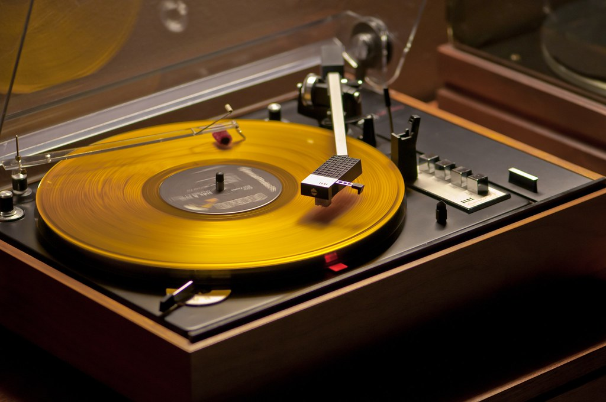
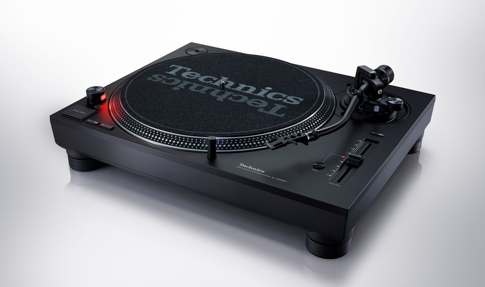
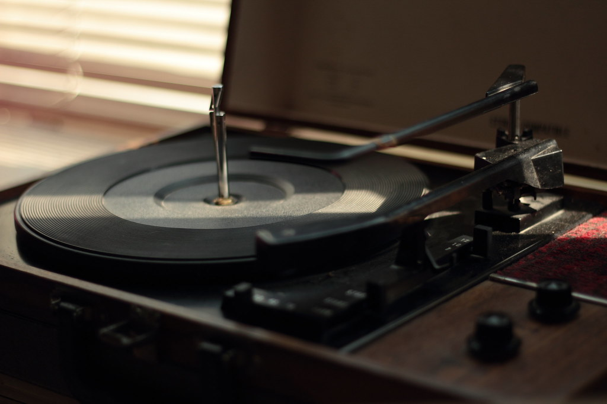
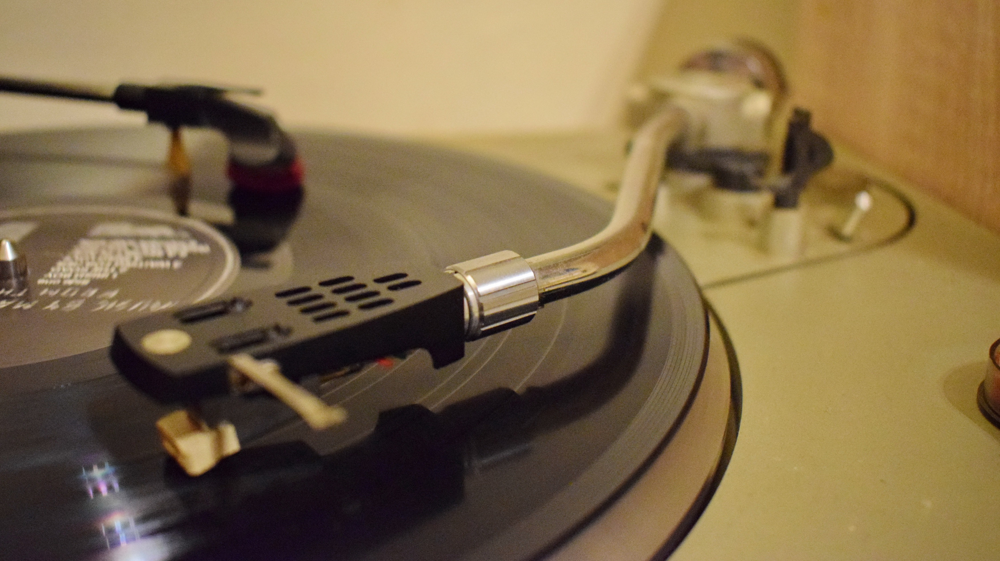

There is something about the sound that is so soothing to listen to especially when feeling nostalgic.

experience the power of analog

the technics mk7
hi-fi

vintage culture

uncompromised quality
At its best, vinyl gives small creators an opportunity to support themselves, fans to connect with their favorite works of art and small businesses to engage with an ancient craft.